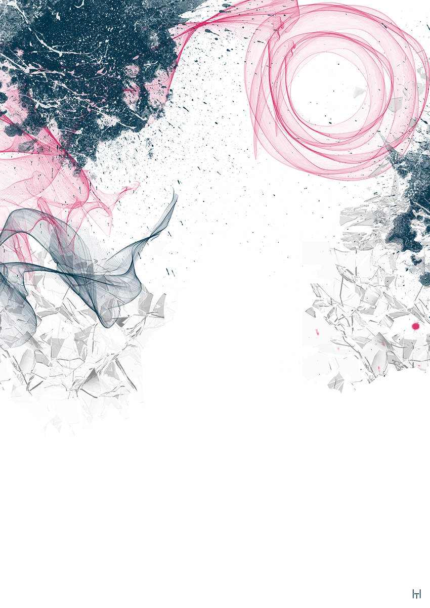

Любов Архипівна Соменко (Куценко) народилася в 1935 р. на Харківщині. Перші дитячі спогади Люби
торкаються часів життя в ромському кологоспі в Лозовій, де загинув батько – першокласний коваль. Війна
застала багатодітну родину в с. Мартинівка, куди вони переїхали з вітчимом. Куценки разом із кількома
іншими родинами, що жили на окраїні села, не знали про виїзд та евакуацію, тому віч-на-віч зустрілись з
ворогом, який двічі займав село. Серед жахів бомбардування, розстрілів та грабунку у спогадах Люби
виринали й сюжети про спроби порятунку від голодної смерті:
Аудіо текст
Соменко Любов Архипівна
Во врємя войни у сім'ї нас було, щас скажу – шесть. Нас три, і там один і… - п’ять. Було шесть
дітей, одна дєвочка вмерла. Шесть було. Ну осталось п’ять. Старша сестра гляділа всих, їсти
варила. Усіх няньчила. В школу не могла ходить, того шо батько не розрі…
А я ходила по селі їсти просила. Зайдеш в дом – дайтє кусочек хлєба.. Ну, давали ж люди.
Спасіба, не отказували. Давали кусочєк хлєба. Хлєб давалі. Ну хто… Ну, сало рідко давали.
Картошину давали… Я все це в торбочку складала і додому своїм несла.
І зімой просили ходілі. Вот, послє войни пошли, це… І во врємя войни ходили. Ходили по хатам і
просили. А то, шо люди давали в торбочку клали. Якась торбочка була.

Соменко Любов Архипівна
Спогади про воєнне дитинство відображають залежність дітей від інших людей, і в першу чергу – свого
найближчого оточення – родини. У них дуже часто зустрічаємо опис взаємин з членами родини, із сусідами,
однолітками, друзями, ворогами. Але на відміну від мирного часу, коли основні побутові клопоти лежали на
дорослих, тепер дітям часто доводилось піклуватись про те як прохарчуватись самим, а іноді – й своїм
родинам.
Детальний розгляд спогадів про цей період допомагає розібратися в особливостях добування продуктів
харчування та речей першої необхідності.
Оскільки у роки війни багато родин залишились без батька, старші хлопчики брали на себе відповідальність
про забезпечення родини харчами. Якщо ж хлопчиків у родині не було, то працювати, як правило, йшли
старші дівчата [2].
Така доля спіткала нашу героїню – Любов Соменко та її старшу сестру.
Любов Архипівна Соменко (Куценко) народилася в 1935 р. на Харківщині. Перші дитячі спогади Люби
торкаються часів життя в ромському кологоспі в Лозовій, де загинув батько – першокласний коваль. Війна
застала багатодітну родину в с. Мартинівка, куди вони переїхали з вітчимом. Куценки разом із кількома
іншими родинами, що жили на окраїні села, не знали про виїзд та евакуацію, тому віч-на-віч зустрілись з
ворогом, який двічі займав село. Серед жахів бомбардування, розстрілів та грабунку у спогадах Люби
виринали й сюжети про спроби порятунку від голодної смерті:
Во врємя войни у сім'ї нас було, щас скажу – шесть. Нас три, і там один і… - п’ять. Було шесть дітей,
одна дєвочка вмерла. Шесть було. Ну осталось п’ять.
А я ходила по селі їсти просила. Зайдеш в дом – дайтє кусочек хлєба... Ну, давали ж люди. Спасіба,
не
отказували. Давали кусочєк хлєба. Хлєб давалі. Ну хто… Ну, сало рідко давали. Картошину давали… Я
все це
в торбочку складала і додому своїм несла.
І зімой просили ходілі. Вот, послє войни пошли, це… І во врємя войни ходили. Ходили по хатам і
просили.
А то, шо люди давали в торбочку клали. Якась торбочка була [2].
Дітям зазвичай, подавали більш охоче, ніж дорослим.. Так вони могли врятувати від голодної смерті своїх
старших родичів.
У багатодітних родинах завжди не просто було старшим, оскільки останні на рівні з дорослими мали
опікуватися молодшими братами та сестрами. Про власне дитинство чи навіть навчання не могло бути й мови.
Саме так описує становище своєї старшої сестри Любов Архипівна: «Старша сестра гляділа всих, їсти
варила. Усіх няньчила. В школу не могла ходить, того шо батько не розрішав» [2].
Як бачимо, незважаючи на вразливість, подекуди дітям все ж вдавалось вижити. Нам складно говорити хоча б
про орієнтовну кількість таких випадків, адже ті, спогади, які вдалось зафіксувати – це лише крапля в
морі життєвих історій, що потрапили в шторм воєнного часу. Але поряд з цим варто пам’ятати про тих, кому
так і не вдалось врятуватися і чиї історії вже ніколи не будуть розказані.
Реброва И.В. Мир детской повседневности в условиях оккупации Северного Кавказа // Вестник
Пермского университета. 2014. № 2 (25) [Электронный ресурс]. Режим доступу:
http://histvestnik.psu.ru/table/104-2-25.
3. Їхня пам'ять моїми очима / Авт.-упоряд. Т. Сторожко, Н. Томенко. - Кременчук: Молодіжна
агенція з адвокації ромської культури «АРКА», 2018. - 30 с.